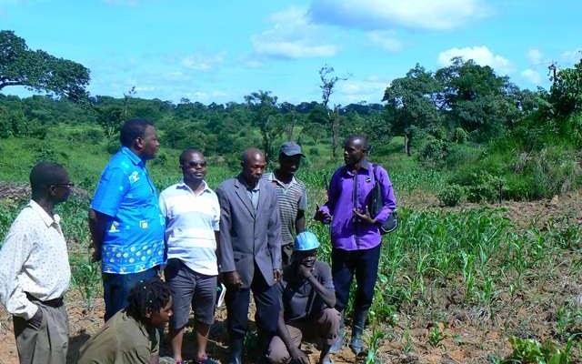
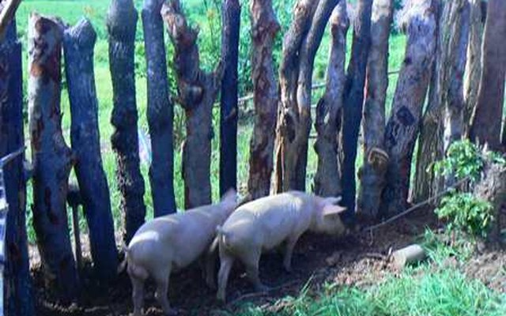

Plastic bottle collection launched in Lubumbashi
FERCOMEX-TCN brings the city of Lubumbashi into plastic bottle collection — a concrete circular-economy initiative that extends our commitments within the GWCN and GAIA networks.
FRNotre Terre — Notre Prospérité
ENOur Land — Our Prosperity
SWUdongo Wetu — Ufanisi Wetu
Updates on our projects, training sessions and field campaigns.
FERCOMEX-TCN brings the city of Lubumbashi into plastic bottle collection — a concrete circular-economy initiative that extends our commitments within the GWCN and GAIA networks.
Completing the barn marks a major milestone for the pig farming project launched with the local Rotary: the animals move into suitable, durable facilities.
Maize, vetiver, hibiscus, soybeans, carrots and onions: the farmland acquired in 2011 enters production, directly benefiting community food security.
Locally produced bricks make the construction of the piggery possible — a self-reliant approach that keeps resources within the community.

A delegation from the Rotary Club of Lubumbashi walks the farm's fields and meets the farmers, sealing a partnership that would give rise to the pig farming project.

The pen is built and the herd moves in: the pig farming project, run with the Rotary Club of Lubumbashi, becomes a lasting source of income and protein for the community.
From 2000 to 2010, FERCOMEX-TCN supported and trained people displaced by the conflicts in eastern DR Congo, teaching basic farming techniques so they could provide for themselves.